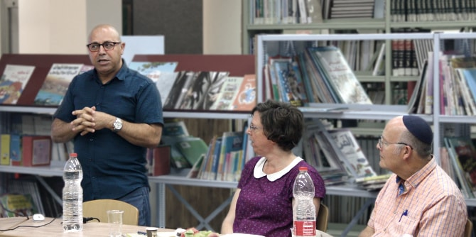
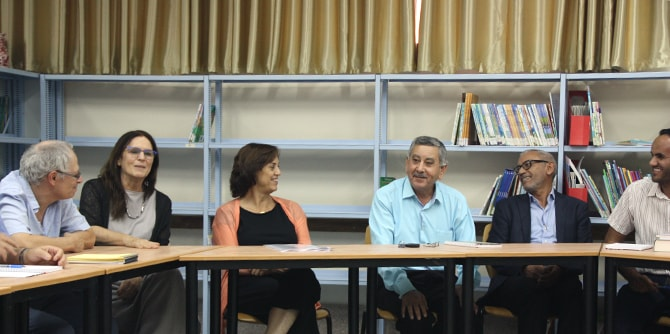

המפגש השישי של "סלון נגב" התקיים בספרייה העירונית ברהט, שמנהלה הוא סאלח אבו ג'עפר, בוגר מחזור א' של תוכנית מנדל למנהיגות מקומית ברהט. המפגש התקיים בסימן שותפות ויחד, מתוך חזון לחיזוקו של מרחב משותף בנגב המחבר בין קהילות שונות ומאפשר גיוון חברתי ותרבותי.
המשתתפים התכנסו להרצאה מפי
ד"ר חוסני אלח'טיב שחאדה, משורר וחוקר תרבות ואמנות האסלאם, שכותרתה
בראשית היה מדבר: טבע יוצר תרבות. דרך עיון בפריטי אמנות אסלאמיים מהארץ ומהעולם, הציג ד"ר שחאדה את מקומם המרכזי של החי והצומח ביצירה ובתרבות לאורך ההיסטוריה האנושית. לדבריו, האמן המוסלמי לא ראה את עצמו מנותק מן המדבר, אף שמקום זה נתפס כסביבה המנותקת מהאדם.

במפגש נכח טלאל אלקרינאווי, ראש עיריית רהט, שדיבר על החשיבות של פיתוח מנהיגות אזרחית מעורבת והדגיש כי "התושב עושה עיר ולא העירייה עושה עיר". אלקרינאווי שיתף במגמות הצמיחה הניכרות ברהט בשנים האחרונות, ובפרט סיפר על המהפכה החיובית שהנשים מקדמות בתחומי התעסוקה וההשכלה באזור.
המפגש היווה המשך לשיח מלמד ופורה על תרבות מקומית ועל הצורך בפיתוח מנהיגות תרבות בנגב. "סלון נגב", בהובלתן של
ד"ר רות קלדרון וד"ר עדי ניר שגיא, הוא פורום של מנהיגים ודמויות מפתח מאזור הנגב המתכנס ללימוד ולהשראה על תרבות ויצירה מקומית. למפגש הגיעו דמויות מפתח מובילות מהנגב הפועלות ברשויות המקומיות, באקדמיה, במוסדות ציבור ובגופי תרבות בתחומי היצירה והאמנות המקומית.

{kind=link}
{kind=link}